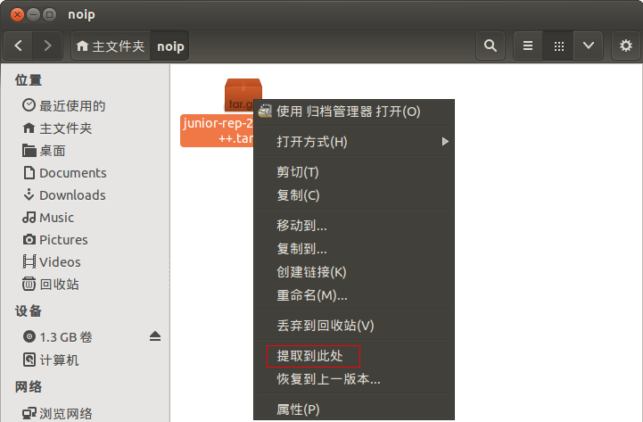
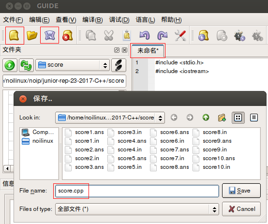

竞赛实战中你的考题一般会呈现在桌面(~/Desktop)文件夹下。


以NOIP 2017年第23届普及组复赛试题score为例，说明在noilinux下如何用GUIDE进行编程和测试的实践过程。

在GUIDE工具栏选择选择 新建 图标，出现标题为 未命名*（注意*表示没有保存） 的编辑窗口，输入几行C++程序代码。
#include <iostream>
#include <cstdio>
选择 保存 图标，出现 保存 对话框，在 File Name 处输入 score.cpp ，点击 Save 按钮保存该文件，观察编辑窗口标题的变化。

完成全部代码
#include <iostream>
#include <cstdio>
using namespace std;
int main(){
int a,b,c;
cin >> a >> b >> c;
cout << a * 0.2 + b*0.3 + c*0.5 << endl;
return 0;
}
按 Ctrl+s 组合键或工具条上 保存 图标存盘，注意观察编辑窗口标题的变化。
在GUIDE中完善刚刚执行通过的程序，增加输入/输出重定向语句。
#include <iostream>
#include <cstdio>
using namespace std;
int main(){
int a,b,c;
freopen("score.in","r",stdin);
freopen("score.out","w",stdout);
cin >> a >> b >> c;
cout << a * 0.2 + b*0.3 + c*0.4 << endl;
fclose(stdout);
fclose(stdin);
return 0;
}


#!/bin/bash
i=1
while [ $i -le 10 ]
do
echo score$i
cp -f score$i.in score.in
./score
#./score < score$i.in > score.out
if diff score$i.ans score.out ; then
echo Ac
fi
i=$(($i+1))
done

noilinux@ubuntu:~$ cd noip/junior-rep-23-2017-C++/score/
noilinux@ubuntu:~/noip/junior-rep-23-2017-C++/score$ ls

noilinux@ubuntu:~/noip/junior-rep-23-2017-C++/score$ sudo sh ./score.sh
[sudo] password for noilinux:
score1
Ac
score2
Ac
... ...

noilinux@ubuntu:~/noip/junior-rep-23-2017-C++/score$ sudo sh ./score.sh
score1
1c1
< 40
---
> 32